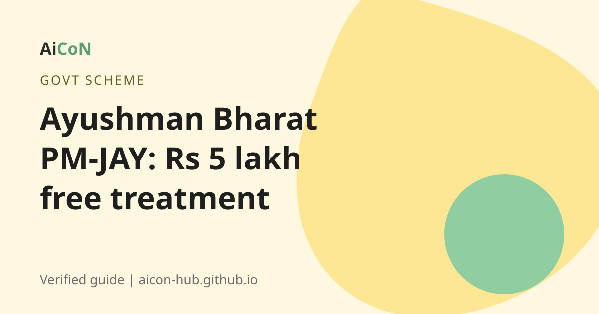

Ayushman Bharat PM-JAY: Rs 5 lakh free treatment and how to check your family
Ayushman Bharat PM-JAY gives up to Rs 5 lakh per family per year for hospital treatment, paid by the government. Since October 2024, people aged 70 and above are covered too, whatever their income.

What is PM-JAY?
Ayushman Bharat Pradhan Mantri Jan Arogya Yojana (AB PM-JAY) is the Government of India's health cover scheme. A PIB release says it provides cover of Rs 5 lakh per family per year for secondary and tertiary care hospitalisation to 12 crore families, the bottom 40 percent of India's population. There is no cap on family size, and all members of eligible families are covered irrespective of age and gender.
The treatment is cashless at empanelled hospitals. The National Health Authority (NHA) runs the scheme.
Senior citizens aged 70 and above
PIB says that in October 2024 the Government expanded the scheme to give free health cover of Rs 5 lakh per year to all senior citizens aged 70 years and above, irrespective of income. They get the Ayushman Vay Vandana card. This is an update the earlier post did not mention.
Who qualifies?
For the main scheme, eligibility is decided from government data and not by a form you fill. The earlier post said it is based on SECC data. The Play Store listing of the official app describes cover for more than 10 crore poor and vulnerable families, while PIB says 12 crore. Numbers differ by source and date. Check your name instead of relying on a number.
How to check and get your card, step by step
- Open the official beneficiary portal beneficiary.nha.gov.in or the official Ayushman app.
- Log in with your mobile number and OTP.
- Search for your family using the options on the portal, such as mobile number or ration card details.
- If your family is on the list, complete eKYC and create your Ayushman card.
- You can also visit an empanelled hospital or a Common Service Centre (CSC). In Kerala, an Akshaya centre can help.
- You can call the helpline 14555.
When you need treatment, show your card and ID at the hospital's Ayushman Mitra desk.
Cost, eligibility and limits
| Cost | Free. The card and the eligibility check cost nothing. |
|---|---|
| Cover | Up to Rs 5 lakh per family per year for hospital care. |
| Who | Eligible poor and vulnerable families, and all citizens aged 70 and above. |
| Limits | Only empanelled hospitals. Only hospital stays (secondary and tertiary care), not normal doctor visits. |
| Kerala | Some states run their own schemes with PM-JAY. Check with your local health office how it works in your district. |
Stay safe
- Nobody can charge you to register or make your card.
- Use only the official portal, the Ayushman app or helpline 14555.
Frequently asked questions
Is PM-JAY free?
Yes. The cover is paid by the government and the card is free.
Do I need the card to get treatment?
You need to be verified as a beneficiary. The card makes it easy.
I am 72. Can I get it?
Yes. People aged 70 and above are covered, irrespective of income, according to PIB.
Is ABHA the same as Ayushman card?
No. See our ABHA guide. ABHA is a health ID. The Ayushman card is for PM-JAY insurance cover.
What is the helpline?
14555, according to the official materials.
Sources: Beneficiary portal, PIB release on AB PM-JAY, PIB: senior citizens 70+ announcement, Ayushman app (Google Play). Checked 6 October 2026.